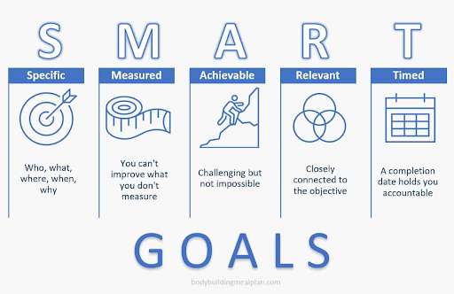
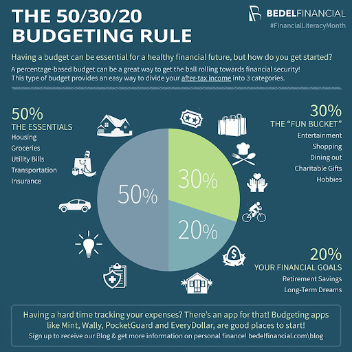
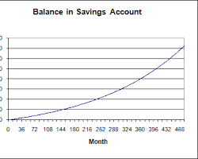
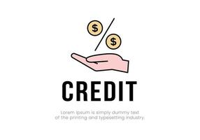

Budgeting
Budgeting is a fundamental financial practice that enables individuals to proactively plan how to manage their money based on their financial situation. It serves as a financial roadmap, helping individuals allocate their income to meet various financial needs and goals. A well-structured budget can be a powerful tool for maintaining financial stability, saving money, and avoiding overspending. By creating a budget, individuals can gain a clear understanding of their financial position, assess whether they have sufficient income to cover their expenses, and make informed decisions about where to allocate their resources. The process of creating a budget involves several key steps. First, individuals need to calculate how much money they must earn or save during a specific period, such as a month. Next, they should plan how to allocate this income to cover both essential needs and discretionary spending. The 50/30/20 rule, which recommends allocating 50% of income to needs (such as housing and utilities), 30% to wants (such as entertainment and dining out), and 20% to savings (including emergency funds and retirement accounts), can be a helpful guideline. To ensure the effectiveness of their budget, individuals need to track their expenses meticulously. This can be done manually or with the assistance of budgeting apps, which provide insights into income and expenditure patterns. Additionally, setting measurable, realistic, specific, and time-bound financial goals is an essential aspect of budgeting. Monitoring progress toward these goals helps individuals stay on track and make necessary adjustments to their financial plan, ensuring that it remains applicable to their evolving financial situation.
 Savings
Savings is a fundamental aspect of financial literacy that holds immense importance for teenagers. It serves as a financial safety net, providing closure and security in times of need. Saving money allows individuals to build a cushion for unexpected expenses and emergencies, helping to avoid debt and financial troubles. Additionally, saving is a vital step in preparing for the future, such as setting aside funds for education, buying a car, or planning for retirement. By instilling the habit of saving from a young age, teenagers can develop responsible financial practices that will benefit them throughout their lives. There are various types of savings accounts to choose from, each with its own advantages and disadvantages. Traditional savings accounts, while offering easy access to funds, tend to have lower interest rates, which may be offset by monthly maintenance fees. High-yield savings accounts, often offered by online banks, provide the opportunity to earn higher interest rates with lower fees, though they may lack physical branch access. Money market accounts are another option, offering competitive rates and check-writing abilities, but they may require higher initial deposits. Certificate of Deposit (CD) accounts provide higher interest rates for those willing to commit their money for a set period, but early withdrawals can incur penalties. Cash management accounts are distinct, designed for investing rather than saving, and offer features of both checking and savings accounts. Specialty savings accounts are tailored to specific financial goals but may come with certain restrictions or lower interest rates. In the realm of savings, setting responsible goals is paramount. It is essential to align your savings goals with your current financial situation and life objectives. Impulse spending on lavish items without having the financial means to support them should be avoided. Instead, teenagers should strive to set clear and achievable savings targets that reflect their financial aspirations and promote responsible financial management. By understanding the importance of savings, exploring different types of savings accounts, and setting realistic goals, teenagers can establish a solid foundation for their financial future.
Credit and Debt
Credit and debt play significant roles in the financial lives of teenagers and adults alike. Understanding credit is essential because it is a financial arrangement that permits individuals to borrow money with the obligation to repay it in the future. One's credit history, which details their financial behavior, greatly influences various aspects of life, such as the ability to secure loans, find employment, rent housing, obtain insurance, and more. The credit report, a summary of an individual's credit history, is used by businesses to assess creditworthiness. Building and maintaining good credit involves making timely loan payments, avoiding maxing out credit limits, establishing a lengthy credit history, and only seeking credit when necessary. Fact-checking credit reports ensures that the information presented is accurate and can help prevent potential issues related to credit. Conversely, avoiding debt and understanding its consequences are crucial aspects of financial literacy. Debt can negatively impact an individual's net worth and financial stability. It's easy to overspend and accumulate debt, but extricating oneself from it can be a challenging and costly endeavor. Debt tends to come with interest and fees, making it a more expensive way to finance purchases compared to saving and paying with cash. Additionally, the future is unpredictable, and unexpected expenses or emergencies can exacerbate debt-related stress. As such, it's important for teenagers and young adults to appreciate the significance of managing credit wisely and avoiding unnecessary debt, as it can have lasting implications for their financial well-being.
